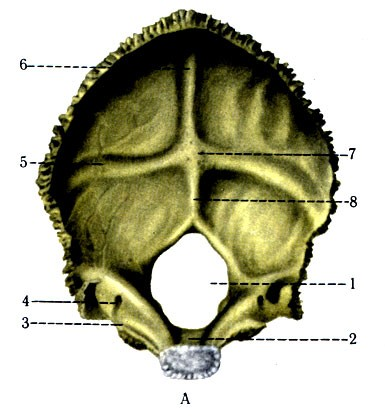

Ішкі көрініс
| № | Латинский | Русский | Казахский |
|---|---|---|---|
| 1 | foramen occipitale magnum | большое затылочное отверстие | үлкен шүйде тесігі |
| 2 | clivus | скат | еңіс |
| 3 | sulcus sinus petrosi inferioris | борозда нижнего каменистого синуса | төменгі тасты веналық қойнау жүлгесі |
| 4 | canalis condylaris | мыщелковый канал | шүйде айдаршығының өзегі |
| 5 | sulcus sinus transversus | борозда поперечного синуса | көлденең веналық қойнау жүлгесі |
| 6 | sulcus sinus sagittalis superioris | борозда верхнего сагиттального синуса | жоғарғы сагиттал веналық қойнау жүлгесі |
| 7 | protuberantia occipitalis interna | внутренний затылочный выступ | ішкі шүйде төмпешігі |
| 8 | crista occipitalis interna | внутренний затылочный гребень | ішкі шүйде қыры |

Сыртқы көрінісі